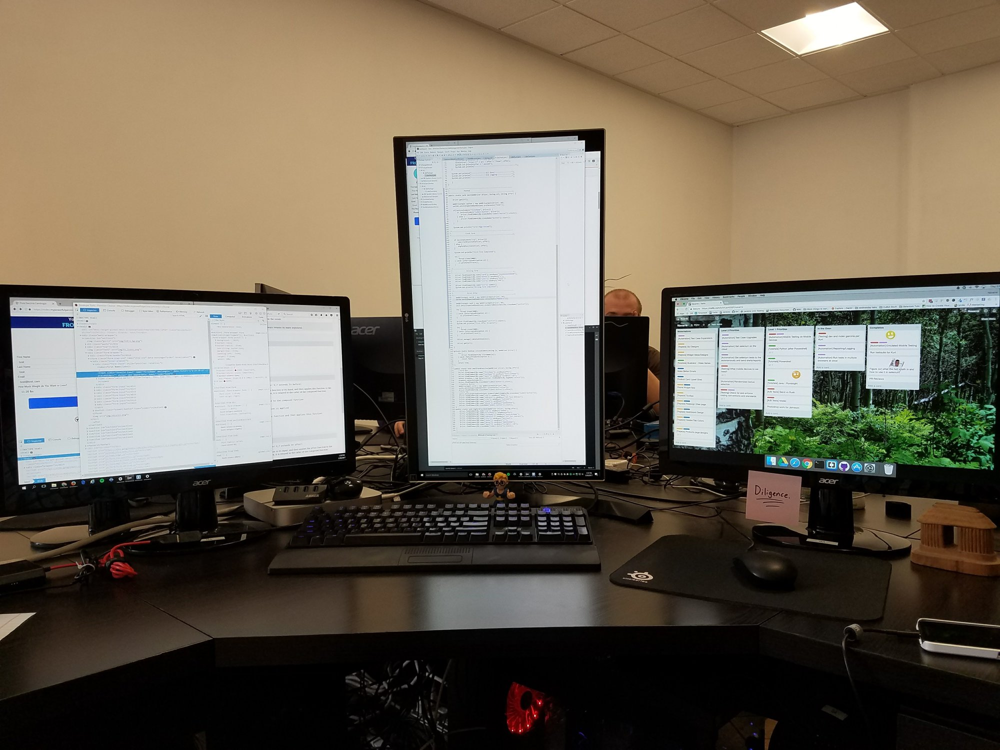

Passion
Web Design
I build for the web with a bias toward things I can read, own, and ship without a ceremony. Most of NavarreVal.com is static HTML, CSS, and JavaScript — checked into Git, deployed on Cloudflare Pages — because the page should load fast and stay under my control.
Practice
Frameworks are fine when the problem needs them. A lot of personal-site work does not. I care about clear structure, CSS that does not fight itself, and small pieces of JS only where the page earns it. When something needs live data, I reach for a Worker at the edge instead of dragging a whole app framework along for the ride.
Projects
NavarreVal.com
- Personal site: static HTML, CSS, and JavaScript on Cloudflare Pages
- Passion pages and edge Workers for live Reading and Video Games shelves
UintahValley.com
- Utah kitchen shop site for the vanilla extract line
- Product and story pages
MealsThatMadeUs.com
- Food and memory site
- Companion to the fleet’s Galley lane
Miles Broadband
- Broadband provider site work
- Plans, coverage, and contact for a local fiber shop
Looking ahead
I keep iterating this site as the work teaches me what to keep and what to cut. If you want to see how it is put together, the source is public on GitHub.